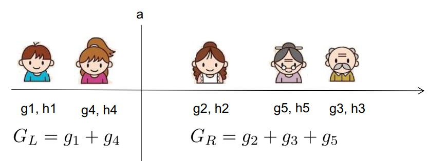

<!DOCTYPE html>


<html lang="en">


<head>
  <meta charset="utf-8" />
   
  <meta name="keywords" content="c,c++,java,python,leetcode,algorithm,reading,life,moods,machine-learning,data-mining,deep-learning,AI" />
   
  <meta name="description" content="一个分享机器学习、算法与数据结构，个人学习心得、读书笔记、生活的博客。" />
  
  <meta name="viewport" content="width=device-width, initial-scale=1, maximum-scale=1" />
  <title>
    『我爱机器学习』集成学习（三）XGBoost |  一个分享机器学习、算法与数据结构，个人学习心得、读书笔记、生活的博客。
  </title>
  <meta name="generator" content="hexo-theme-ayer">
  
  <link rel="shortcut icon" href="/favicon.ico" />
  
  
<link rel="stylesheet" href="/dist/main.css">

  
<link rel="stylesheet" href="https://cdn.jsdelivr.net/gh/Shen-Yu/cdn/css/remixicon.min.css">

  
<link rel="stylesheet" href="/css/custom.css">

  
  
<script src="https://cdn.jsdelivr.net/npm/pace-js@1.0.2/pace.min.js"></script>

  
  

  

</head>

</html>

<body>
  <div id="app">
    
      
    <main class="content on">
      <section class="outer">
  <article
  id="post-machine-learning-xgboost"
  class="article article-type-post"
  itemscope
  itemprop="blogPost"
  data-scroll-reveal
>
  <div class="article-inner">
    
    <header class="article-header">
       
<h1 class="article-title sea-center" style="border-left:0" itemprop="name">
  『我爱机器学习』集成学习（三）XGBoost
</h1>
 

    </header>
     
    <div class="article-meta">
      <a href="/machine-learning-xgboost/" class="article-date">
  <time datetime="2018-05-20T01:18:34.000Z" itemprop="datePublished">2018-05-20</time>
</a> 
      
  <div class="article-category">
    <a class="article-category-link" href="/categories/study/">study</a> / <a class="article-category-link" href="/categories/study/%E6%9C%BA%E5%99%A8%E5%AD%A6%E4%B9%A0/">机器学习</a>
  </div>
 
       
        
<div class="word_count">
    <span class="post-time">
        <span class="post-meta-item-icon">
            <i class="ri-quill-pen-line"></i>
            <span class="post-meta-item-text"> Word count:</span>
            <span class="post-count">5.2k</span>
        </span>
    </span>

    <span class="post-time">
        &nbsp; | &nbsp;
        <span class="post-meta-item-icon">
            <i class="ri-book-open-line"></i>
            <span class="post-meta-item-text"> Reading time≈</span>
            <span class="post-count">20 min</span>
        </span>
    </span>
</div>

      
       
        <div class="word_count">
    <span class="post-meta-item-icon">
        <i class="ri-eye-fill"></i> 
        阅读数:<span id="/machine-learning-xgboost/" data-flag-title="『我爱机器学习』集成学习（三）XGBoost" class="leancloud_visitors">0</span>次
    </span>
</div>
      
    </div>
      
    <div class="tocbot"></div>


  
    <div class="article-entry" itemprop="articleBody">
       
  <p>如果你打过诸如Kaggle、天池等数据挖掘的比赛，XGBoost的威名想必你也有所耳闻。</p>
<p>本文将详细介绍XGBoost相关内容，包括但不限于</p>
<ul>
<li>泰勒公式</li>
<li>XGBoost的推导</li>
<li>XGBoost为什么快</li>
</ul>
<a id="more"></a>
<h2 id="泰勒公式"><a href="#泰勒公式" class="headerlink" title="泰勒公式"></a>泰勒公式</h2><p>在介绍XGBoost前，首先要介绍一下泰勒公式，因为在之后的推导中会用到。假如你已经掌握，可以跳过本小节。</p>
<p>泰勒公式（Taylor’s Formula）是一个用函数在某点的信息描述其<strong>附近取值</strong>的公式。其初衷是用多项式来近似表示函数在某点周围的情况。</p>
<p>比如在SVM的高斯核函数中，我们就用到了$e^x$在x=0处的展开：$e^x = \sum_{n=0}^{\infty} \frac{x^n}{n!}$ 。当然这个公式只对<strong>0</strong>附近的x有用，x离0越远，这个公式就越不准确。实际函数值和多项式的偏差称为泰勒公式的<strong>余项</strong>。</p>
<p>对于一般的函数，泰勒公式的系数的选择依赖于函数在<strong>一点的各阶导数值</strong>。函数$f(x)$在$x_0$处的基本形式如下：</p>
<script type="math/tex; mode=display">
\begin{align*}
f(x) &= \sum_{n=0}^\infty\frac{f^{(n)}(x_0)}{n!}(x-x_0)^n  \tag{1-1}
\\&= f(x_0) +f^{1}(x_0)(x-x_0)+ \frac{f^{2}(x_0)}{2}(x-x_0)^2 + \cdots + \frac{f^{(n)}(x_0)}{n!}(x-x_0)^n
\end{align*}</script><p>还有另外一种常见的写法，$x^{t+1} = x^t + \Delta x$，将$f(x^{t+1})$在$x^t$处进行泰勒展开，得：</p>
<script type="math/tex; mode=display">
\begin{align*}
f(x^{t+1}) &= f(x^t) +f^{1}(x^t)\Delta x+ \frac{f^{2}(x^t)}{2}\Delta x^2 + \cdots 
\end{align*}</script><p>如果你想更直观的了解泰勒公式，可以查看：<a target="_blank" rel="noopener" href="https://www.zhihu.com/question/21149770/answer/111173412">如何通俗地解释泰勒公式？ – 马同学的回答</a> </p>
<h3 id="梯度下降法"><a href="#梯度下降法" class="headerlink" title="梯度下降法"></a>梯度下降法</h3><p>梯度下降法其实可以泰勒公式来表示。假设要<strong>最小化</strong>损失函数$L(w)$, 我们知道，梯度下降法的过程为：</p>
<ul>
<li>选取初值$w^0$</li>
<li>迭代更新$w^{t+ 1} = w^{t} - \eta L’(w)$</li>
</ul>
<p>其中，$\eta$为学习率，一般设定为一个小的数，如0.1，当然，还有其它的可以变化的学习率的方式。</p>
<p>为什么这样是对的呢？用泰勒公式在$w^{t}$处一阶展开则可以表示为</p>
<script type="math/tex; mode=display">
\begin{align*}
L(w^{t + 1}) &=L(w^{t}) + L'(w^{t})(w^{t+1} - w^t) + R \hspace{5ex} & R为残差项\\
&\approx L(w^{t}) + L'(w^{t})(w^{t+1} - w^t)   & 当(w^{t+1} - w^t) 较小的时候，R \approx0 \\
&= L(w^{t}) + \eta v L'(w^{t})   & 设w^{t+1} - w^t = \eta v, \eta为学习率，v则为单位向量\\
\end{align*}</script><p>要使得迭代后损失函数变小，即$L(w^{t+1}) \lt L(w^{t})$，回想向量相乘的公式，$|!|v|!|\cdot|!|L’(w^t)|!|\cdot cos\theta$, 则我们可以令v和$L’(w^{t})$反向，这样可以让他们向量乘积最小，于是</p>
<script type="math/tex; mode=display">
v = - \frac{L'(w^t)}{|\!|L'(w^t)|\!|}</script><p>于是</p>
<script type="math/tex; mode=display">
\begin{align*}
w^{t+1} = w^{t} -\eta \frac{L'(w^t)}{|\!|L'(w^t)|\!|}
\end{align*}</script><p>又因为$|!|L’(w^t)|!|$为标量，可以并入$\eta$中，即简化为：</p>
<script type="math/tex; mode=display">
\begin{align*}
w^{t+1} = w^{t} -\eta L'(w^t)\tag{1-2}
\end{align*}</script><h3 id="牛顿法"><a href="#牛顿法" class="headerlink" title="牛顿法"></a>牛顿法</h3><p>牛顿法其实是泰勒公式在$w^{t}$处二阶展开，即</p>
<script type="math/tex; mode=display">
L(w^{t+1})   \approx  L(w^{t}) + L'(w^{t})(w^{t+1} - w^t) +  \frac{L''(w^{t})}{2}(w^{t+1} - w^t) ^2 \tag{1-3}</script><p>假设参数w为一维向量，若$L(w^{t+1})$极小，必然有其一阶导数为0，因此可以让L对$w^{t+1}$求偏导得</p>
<script type="math/tex; mode=display">
\frac{\partial L}{\partial  w^{t+1}}  =  L'(w^{t})+  (w^{t+1} - w^t)L''(w^{t})</script><p>令偏导为0，可得：</p>
<script type="math/tex; mode=display">
w^{t+1} = w^{t} -\frac{L'(w^{t})}{L''(w^{t})}</script><p>如果扩展到高维，即$\bf w$为向量，则</p>
<script type="math/tex; mode=display">
w^{t+1} = w^{t} - H^{-1}g\hspace{5ex} H为海森矩阵，g=L'(w^t)</script><h4 id="在数值分析中的做法"><a href="#在数值分析中的做法" class="headerlink" title="在数值分析中的做法"></a>在数值分析中的做法</h4><p>上面的做法是在最优化问题中的，求的是一阶导为0，即$f’(x) = 0$。</p>
<p>而在数值分析中，想要求的是方程式的根，即$f(x) = 0$，我们只需要进行一阶展开,并令其为0，得：</p>
<script type="math/tex; mode=display">
f(x^{t + 1}) =f(x^{t}) + f'(x^{t})(x^{t+1} - x^t) = 0</script><p>于是有：</p>
<script type="math/tex; mode=display">
x^{t + 1} = x^t -\frac{f(x^t)}{f'(x^t)}</script><p>这就是迭代的公式。</p>
<p>如果你对这两个困惑的话，可以参考wiki百科：</p>
<ul>
<li><a target="_blank" rel="noopener" href="https://en.wikipedia.org/wiki/Newton%27s_method">Newton’s method</a></li>
<li><a target="_blank" rel="noopener" href="https://en.wikipedia.org/wiki/Newton%27s_method_in_optimization">Newton’s method in optimization</a></li>
</ul>
<h3 id="牛顿法和梯度下降法对比"><a href="#牛顿法和梯度下降法对比" class="headerlink" title="牛顿法和梯度下降法对比"></a>牛顿法和梯度下降法对比</h3><p>梯度下降法只利用到了目标函数的一阶偏导数信息，以负梯度方向作为搜索方向，只考虑目标函数在迭代点的局部性质。</p>
<p>而牛顿法不仅使用目标函数的一阶偏导数，还进一步利用了目标函数的二阶偏导数，这样就考虑了梯度变化的趋势，因而能更全面的确定合适的搜索方向以加快收敛。但牛顿法主要有一下两个缺点：</p>
<ul>
<li>对目标函数有严格的要求，函数必须有连续的一、二阶偏导，海森矩阵必须正定。</li>
<li>计算相当复杂，除需计算梯度以外，还需计算二阶偏导数矩阵和它的逆矩阵，计算量和空间消耗比较大。</li>
</ul>
<p>因此，有拟牛顿法，可以参考<a target="_blank" rel="noopener" href="https://blog.csdn.net/itplus/article/details/21896453">https://blog.csdn.net/itplus/article/details/21896453</a></p>
<h2 id="XGBoost"><a href="#XGBoost" class="headerlink" title="XGBoost"></a>XGBoost</h2><p>XGBoost其实也是GBDT的一种，等下你会发现，还是加性模型和前向优化算法。</p>
<p>在正式介绍之前，首先讲点别的。</p>
<p>在有监督学习中，可以分为：<strong>模型，参数 、目标函数和学习方法</strong>。</p>
<ul>
<li>模型即给定输入$x_i$如何预测输出$y_i$，而这个y可以很多种形式，如回归，概率，类别、排序等</li>
<li>参数即比如线性回归的w</li>
<li>目标函数可以分为损失函数+正则 $Obj(\Theta) = L(\Theta)+\Omega(\Theta)$<ul>
<li>损失函数：如平方误差等，告诉我们模型拟合数据的情况。 =&gt; Bias</li>
<li>正则项：惩罚复杂的模型，鼓励简单的模型。 =&gt; Variance</li>
</ul>
</li>
<li>模型学习方法即解决给定目标函数后怎么学的问题。</li>
</ul>
<p>讲这三个方面的内容是为什么呢？ 这三个方面的内容指导着XGBoost整个系统的设计！下面你可以带着这三个看看XGBoost是怎么做的！</p>
<p>接下来开始XGBoost之旅~ 本小节主要是根据陈天奇大牛的博文以及PPT来进行介绍。</p>
<h3 id="CART"><a href="#CART" class="headerlink" title="CART"></a>CART</h3><p>前面讲过分类回归树CART，这里就当复习，过一遍就好。</p>
<p>假设要判断一个人是否喜欢电脑游戏，输入为年龄，性别职业等特征。可以得到如下的<strong>回归树</strong>：</p>
<p></p>
<p>在叶子节点上会有一个分数，而这个分数我们可以做很多事情，诸如进行回归，映射成概率进行分类、排序等。</p>
<h3 id="Tree-ensemble"><a href="#Tree-ensemble" class="headerlink" title="Tree ensemble"></a>Tree ensemble</h3><p>单棵CART拟合能力有限，想想我们之前的集成学习，可以使用多棵树！</p>
<p>比如下图用两棵树一起进行预测，样本的预测结果就是两棵树的和：</p>
<p></p>
<p>而“一起预测”的学习方法又分为随机森林（Random Forest）和提升树（Boosted tree）。这是不是把前面的集成学习的知识串起来了？这里，多棵树即我们的<strong>模型</strong>： $\hat y_i = \sum_{t=1}^Kf_t(x_i),  f_t \in\mathcal{F}$ </p>
<p>这里假设有K棵树，$f$是回归树，而$\mathcal{F}$ 对应了所有回归树组成的函数空间。</p>
<p>那么模型的<strong>参数</strong>是什么呢？就是树的结构，以及每个叶子节点上预测的分数。或者说就是一棵棵的树。</p>
<h3 id="模型学习"><a href="#模型学习" class="headerlink" title="模型学习"></a>模型学习</h3><p>那么如何<strong>学习模型</strong>呢？这个问题的通用答案就是：<strong>定义目标函数，然后去优化目标函数!</strong> </p>
<h4 id="目标函数"><a href="#目标函数" class="headerlink" title="目标函数"></a>目标函数</h4><p>因此，这里定义目标函数如下，并带了正则项：</p>
<script type="math/tex; mode=display">
Obj(\Theta) = \sum_{i=1}^N l(y_i,\hat y_i) +\sum_{j=1}^t\Omega(f_j)， \ \ f_j \in\mathcal{F} \tag{2-1}</script><p>那么，如何优化上面的目标函数？我们不能用诸如梯度下降的方法，因为$f$是树，而非数值型的向量。</p>
<p>这时候就要想起我们的<strong>前向分步算法</strong>，即贪心法找局部最优解：</p>
<script type="math/tex; mode=display">
\hat y_i^{(t)} = \sum_{j=1}^tf_j(x_i)=\hat y_i^{(t-1)} + f_t(x_i)</script><p>因此，我们每一步找一个使得我们的损失函数降低最大的$f$（贪心法体现在这），因此我们的目标函数可以写为</p>
<script type="math/tex; mode=display">
\begin{align*}
Obj^{\ (t)} &= \sum_{i=1}^N l(y_i,\hat y_i^{(t)}) +\sum_{j=1}^t\Omega(f_j)\\
&=\sum_{i=1}^N l(y_i,\hat y_i^{(t-1)} + f_t({\bf x_i})) + \Omega(f_t)  + constant\\
&=  \sum_{i=1}^N l(y_i,\hat y_i^{(t-1)} + f_t({\bf x_i})) + \Omega(f_t) \tag{2-2}
\end{align*}</script><p>这里简单解释一下上式的意思，第1行的目标函数即在第t轮，每个样本的损失+t轮每棵树的正则项。而在第t轮，前面的t-1轮的正则项都相当于常数，可以不做考虑。</p>
<p>假设损失函数使用的是平方损失，则式2-2写为：</p>
<script type="math/tex; mode=display">
\begin{align*}
Obj^{\ (t)} &=\sum_{i=1}^N \left(y_i - \left(\hat y_i^{(t-1)} + f_t({\bf x_i})\right)\right)^2 + \Omega(f_t) \\
&= \sum_{i=1}^N (\underbrace {y_i - \hat y_i^{(t-1)}}_{残差} - f_t({\bf x_i}))^2 + \Omega(f_t)
\end{align*}</script><p>这就是之前我们GBDT中使用平方损失，然后每一轮拟合的残差。</p>
<p>更一般的，我们之前使用“负梯度”，而现在，我们采用泰勒展开来定义一个近似的目标函数：</p>
<script type="math/tex; mode=display">
\begin{align*}
Obj^{\ (t)} &=\sum_{i=1}^N l(y_i,\hat y_i^{(t-1)} + f_t({\bf x_i})) + \Omega(f_t) \\
&= \sum_{i=1}^N \left(l(y_i,\hat y_i^{(t-1)}) + g_if_t({\bf x_i}) + \frac{1}{2} h_if_t^2({\bf x_i})\right) + \Omega(f_t)  \hspace{5ex} \tag{2-3}\\ 
&其中，g_i=\frac{\partial l(y_i,\hat y_i^{(t-1)})}{\partial \hat y_i^{(t-1)}},h_i=\frac{\partial^2l(y_i,\hat y_i^{(t-1)})}{\partial^2 \hat y_i^{(t-1)}}
\end{align*}</script><p>移除对当前t轮来说是常数项的$l(y_i,\hat y_i^{(t-1)})$得到：</p>
<script type="math/tex; mode=display">
Obj^{\ (t)} = \sum_{i=1}^N \left(g_if_t({\bf x_i}) + \frac{1}{2} h_if_t^2({\bf x_i})\right) + \Omega(f_t)  \hspace{5ex} \tag{2-4}</script><p>可以发现，2-4所示的目标函数<strong>只依赖每个数据点在误差函数上的一阶导数和二阶导数</strong>。</p>
<p>之所以要这么推导，是因为使得工具更一般化，陈天奇的解释原话如下:</p>
<blockquote>
<p>因为这样做使得我们<strong>可以很清楚地理解整个目标是什么，</strong>并且一步一步推导出如何进行树的学习。</p>
<p>这一个抽象的形式对于实现机器学习工具也是非常有帮助的。传统的GBDT可能大家可以理解如优化平方残差，但是这样一个形式包含可所有可以求导的目标函数。也就是说有了这个形式，我们写出来的代码可以用来求解包括回归，分类和排序的各种问题，<strong>正式的推导可以使得机器学习的工具更加一般</strong>。</p>
</blockquote>
<h4 id="正则项"><a href="#正则项" class="headerlink" title="正则项"></a>正则项</h4><p>之前讨论了目标函数中训练误差的部分，接下来讨论树的复杂度定义，即正则项。</p>
<p>什么指标能衡量树的复杂度呢？如树的深度，内部节点个数，<strong>叶子节点个数(T)，叶节点分数(W)</strong>…</p>
<p>XGBoost采用衡量树复杂度的方式为:一棵树里面<strong>叶子节点的个数T</strong>，以及每棵树<strong>叶子节点上面输出分数w</strong>的平方和(相当于L2正则)：</p>
<script type="math/tex; mode=display">
\Omega(f_t) =\gamma T +\frac{1}{2}\lambda\sum_{j=1}^{T} w_j^2 \tag{2-5}</script><p>一个例子如下：</p>
<p></p>
<h4 id="完整的目标函数"><a href="#完整的目标函数" class="headerlink" title="完整的目标函数"></a>完整的目标函数</h4><p>将2-4和2-5合起来，就是：</p>
<script type="math/tex; mode=display">
Obj^{\ (t)} = \underbrace{\sum_{i=1}^N \left(g_if_t({\bf x_i}) + \frac{1}{2} h_if_t^2({\bf x_i})\right)}_{对样本累加} +\gamma T +\frac{1}{2}\lambda \underbrace{\sum_{j=1}^{T} w_j^2}_{对叶结点累加}</script><p>第一项是对样本的累加，而最后一项是对叶结点的累加，我们可以进行改写，将其合并起来。</p>
<p>定义q函数将输入<strong>x</strong>映射到某个叶节点上，则$f_t({\bf x}) = w_{q({\bf x})}$，此外，定义每个叶子节点j上的样本集合为$I_j = \{i|q(x_i) = j\}$，则目标函数可以改写为：</p>
<script type="math/tex; mode=display">
\begin{align*}
Obj^{\ (t)} &=\sum_{i=1}^N \left(g_if_t({\bf x_i}) + \frac{1}{2} h_if_t^2({\bf x_i})\right) +\gamma T +\frac{1}{2}\lambda \sum_{j=1}^{T} w_j^2\\
&=\sum_{i=1}^N \left(g_iw_{q({\bf x_i})} + \frac{1}{2} h_iw_{q({\bf x_i})}^2\right) +\gamma T +\frac{1}{2}\lambda \sum_{j=1}^{T} w_j^2\\
&=\sum_{j=1}^T \left(\sum_{i \in I_j} g_iw_j+ \frac{1}{2} \sum_{i \in I_j} h_i w_j^2\right) +\gamma T +\frac{1}{2}\lambda \sum_{j=1}^{T} w_j^2\\
&=\sum_{j=1}^T \left(G_jw_j + \frac{1}{2} (H_j + \lambda) w_j^2\right) +\gamma T \tag{2-6}
\end{align*}</script><p>这就得到了我们的完整的目标函数，其中，$G_j = \sum_{i \in I_j} g_i \quad H_j = \sum_{i \in I_j} h_i$</p>
<p>因此，现在要做的是两件事：</p>
<ol>
<li>确定树的结构, 这样，这一轮的目标函数就确定了下来</li>
<li>求使得当前这一轮(第t轮)的目标函数最小的叶结点分数w。(Obj代表了当我们指定一个树的结构的时候，我们在目标上面最多减少多少，也称为<strong>结构分数</strong>，structure score）</li>
</ol>
<p>假设已经知道了树的结构，那么第2件事情是十分简单的，直接对w求导，使得导数为0，就得到每个叶结点的预测分数为：</p>
<script type="math/tex; mode=display">
w_j = - \frac{G_j}{H_j+\lambda} \tag{2-7}</script><p>带入2-6得到最小的结构分数为：</p>
<script type="math/tex; mode=display">
\begin{align*}
Obj^{\ (t)} &=\sum_{j=1}^T \left(G_jw_j + \frac{1}{2} (H_j + \lambda) w_j^2\right) +\gamma T\\
&=\sum_{j=1}^T \left(- \frac{G_j^2}{H_j+\lambda} + \frac{1}{2}  \frac{G_j^2}{H_j+\lambda} \right) +\gamma T\\
&=- \frac{1}{2}\sum_{j=1}^T \left({\color{red}{\frac{G_j^2}{H_j+\lambda}} } \right) +\gamma T \tag{2-8}
\end{align*}</script><p>2-8所表示的目标函数越小越好。</p>
<p>一个结构分数计算例子如下图：</p>
<p></p>
<h4 id="树的结构确定"><a href="#树的结构确定" class="headerlink" title="树的结构确定"></a>树的结构确定</h4><p>接下来要解决的就是上面提到的问题，即如何确定树的结构。</p>
<p>暴力枚举所有的树结构，然后选择结构分数最小的。 树的结构太多了，这样枚举一般不可行。</p>
<p>通常采用贪心法，每次尝试分裂一个叶节点，<strong>计算分裂后的增益</strong>，选增益最大的。这个方法在之前的决策树算法中大量被使用。而增益的计算方式比如ID3的信息增益，C4.5的信息增益率，CART的Gini系数等。那XGBoost呢？</p>
<p>回想式子2-8标红色的部分，衡量了每个叶子节点对总体损失的贡献，我们希望目标函数越小越好，因此红色的部分越大越好。</p>
<p>XGBoost使用下面的公式计算增益：</p>
<script type="math/tex; mode=display">
Gain = \frac{1}{2}[\underbrace{\frac{G_L^2}{H_L+\lambda}}_{左子树分数} + \underbrace{\frac{G_R^2}{H_R+\lambda}}_{右子树分数} - \underbrace{\frac{(G_L+G_R)^2}{H_L+H_R+\lambda}}_{分裂前分数}] - \underbrace{\gamma}_{新叶节点复杂度}\tag{2-9}</script><p>式2-9即2-8红色部分的<strong>分裂后 - 分裂前</strong>的分数。<strong>Gain值越大，说明分裂后能使目标函数减少越多，就越好</strong>。</p>
<p>因此，每次分裂，枚举所有可能的分裂方案，就和CART中回归树进行划分一样，要枚举所有特征和特征的取值。该算法称为<strong>Exact Greedy Algorithm</strong>，如下图所示：</p>
<p></p>
<p>假设现在枚举的是年龄特征$x_j$。现在要考虑划分点a，因此要计算枚举$x_j &lt; a$ 和 $a\le x_j$的导数和：</p>
<p></p>
<p>可以看出，对于一个特征，对特征取值排完序后，枚举所有的分裂点a，只要从左到右扫描一遍就可以枚举出所有分割的梯度$G_L$和$G_R$，然后用式2-9计算即可。这样假设树的高度为H，特征数d，则复杂度为 $O(Hd n\log n)$。 其中，排序为$O(n\log n)$，每个特征都要排序所以乘以d，每一层都要这样一遍，所以乘以高度H。这个仍可以继续优化（之后再讲）。</p>
<p>此外需要注意的是：<strong>分裂不一定会使得情况变好</strong>，因为有一个引入新叶子的惩罚项$\gamma$，优化这个目标相当于进行树的剪枝。当引入的分裂带来的增益小于一个阀值的时候，不进行分裂操作。</p>
<p>再次回到之前说的为啥这么推导：</p>
<blockquote>
<p>大家可以发现，当我们正式地推导目标的时候，<strong>像计算分数和剪枝这样的策略都会自然地出现，而不再是一种因为启发式而进行的操作了</strong>（反观决策树充满着启发式）。</p>
</blockquote>
<h2 id="XGBoost-一些trick"><a href="#XGBoost-一些trick" class="headerlink" title="XGBoost 一些trick"></a>XGBoost 一些trick</h2><p>本小节介绍XGBoost的一些trick，最后总结XGBoost快的原因。</p>
<h3 id="步长-step-size"><a href="#步长-step-size" class="headerlink" title="步长 step-size"></a>步长 step-size</h3><p>同之前的GBDT一样，XGBoost也可以加入步长$\eta$（有的也叫收缩率Shrinkage），这也是防止过拟合的好方法：</p>
<script type="math/tex; mode=display">
\hat y_i^t = \hat y_i^{(t-1)} + {\color{red} \eta} f_t(x_i)\tag{3-1}</script><p>通常步长 $\eta$ 取值为0.1。当然GBDT也可以采用这个。</p>
<h3 id="行、列抽样"><a href="#行、列抽样" class="headerlink" title="行、列抽样"></a>行、列抽样</h3><p>XGBoost借鉴随机森林也使用了列抽样(在每一次分裂中使用特征抽样)，进一步防止过拟合，并加速训练和预测过程。</p>
<p>此外，在实现中还有行抽样（样本抽样）。</p>
<h3 id="树节点划分算法-Approximate-Algorithm"><a href="#树节点划分算法-Approximate-Algorithm" class="headerlink" title="树节点划分算法 - Approximate Algorithm"></a>树节点划分算法 - Approximate Algorithm</h3><p>前面提到过，XGBoost每一步选能使分裂后增益最大的分裂点进行分裂。而分裂点的选取之前是枚举所有分割点，这称为精确的贪心法（Exact Greedy Algorithm）.</p>
<p>当数据量十分庞大，以致于不能全部放入内存时，Exact Greedy 算法就会很慢。因此XGBoost引入了近似的算法。</p>
<p>简单的说，就是根据特征k的分布来确定$l$个候选切分点$S_k = \{s_{k1},s_{k2},\cdots s_{kl}\}$，然后根据这些候选切分点把相应的样本放入对应的<strong>桶</strong>中，对每个桶的$G,H$进行累加。最后在候选切分点集合上贪心查找，和Exact Greedy Algorithm类似。该算法描述如下：</p>
<p></p>
<p>给定了候选切分点后，一个例子为：</p>
<p></p>
<p>那么，现在有两个问题：</p>
<ol>
<li>如何选取候选切分点$S_k = \{s_{k1},s_{k2},\cdots s_{kl}\}$呢？</li>
<li>什么时候进行候选切分点的选取？</li>
</ol>
<p>第1个问题在下一小节说明，先回答第2个问题。</p>
<h4 id="分界点选取时机"><a href="#分界点选取时机" class="headerlink" title="分界点选取时机"></a>分界点选取时机</h4><p>对于问题2，XGBoost有两种策略，<strong>全局策略（Global）和局部策略(Local)</strong></p>
<ul>
<li>Global： <strong>学习每棵树前</strong>， 提出候选切分点</li>
<li>Local： <strong>每次分裂前</strong>， 重新提出候选切分点 </li>
</ul>
<p>一个对比如下图：</p>
<p></p>
<p>桶的个数等于 1 / eps， 可以看出:</p>
<ul>
<li>全局切分点的个数够多的时候，和Exact greedy算法性能相当。</li>
<li>局部切分点个数不需要那么多，因为每一次分裂都重新进行了选择。</li>
</ul>
<h3 id="切分点的选取-Weighted-Quantile-Sketch"><a href="#切分点的选取-Weighted-Quantile-Sketch" class="headerlink" title="切分点的选取 - Weighted Quantile Sketch"></a>切分点的选取 - Weighted Quantile Sketch</h3><p>对于问题1，可以采用分位数，也可以直接构造梯度统计的近似直方图等。</p>
<blockquote>
<p>Notably, it is also possible to directly construct approximate histograms of gradient statistics [22].  It is also possible to use other variants of binning strategies instead of quantile.</p>
</blockquote>
<p>先回答一下什么是分位数，WIKI百科上是这么说的</p>
<blockquote>
<p><strong>quantiles</strong> are cut points dividing the range of a probability distribution into contiguous intervals with equal probabilities, or dividing the observations in a sample in the same way. </p>
<p>即把概率分布划分为连续的区间，每个区间的概率相同。</p>
</blockquote>
<p>以统计学常见的四分位数为例，就是：</p>
<blockquote>
<p>四分位数（Quartile）把所有数值由小到大排列并分成四等份，处于三个分割点位置的数值就是四分位数。</p>
<p>1）<strong>第一四分位数</strong>(Q1)，又称“较小四分位数”，等于该样本中所有数值由小到大排列后第25%的数字；</p>
<p>2）<strong>第二四分位数</strong>(Q2)，又称“中位数”，等于该样本中所有数值由小到大排列后第50%的数字；</p>
<p>3）<strong>第三四分位数</strong>(Q3)，又称“较大四分位数”，等于该样本中所有数值由小到大排列后第75%的数字。</p>
</blockquote>
<p> 可以看出，简单的分位数就是先把数值进行排序，然后根据你采用的几分位数把数据分为几份即可。</p>
<p> 而XGBoost不单单是采用简单的分位数的方法，而是<strong>对分位数进行加权（使用二阶梯度h</strong>），称为：Weighted Quantile Sketch。PS:上面的那个例子采用的是没有使用二阶导加权的分位数。</p>
<p>对特征k构造multi-set 的数据集：$D_k= {(x_{1k}, h_1) , (x_{2k},h_2) , …,(x_{nk},h_n) }$, 其中 $x_{ik}$ 表示样本i的特征k的取值，而$h_i$则为对应的二阶梯度。</p>
<p>可以定义一个rank function为：</p>
<script type="math/tex; mode=display">
r_k(z) = \frac{1}{\sum_{(x,h) \in D_k } h} \sum_{(x,h) \in D_k, x<z} h\tag{3-2}</script><p>式3-2表达了第k个特征小于z的样本比例，和之前的分位数挺相似，不过这里是按照二阶梯度进行累计。而候选切分点$\{s_{k1},s_{k2},\cdots,s_{kl}\}$要求：</p>
<script type="math/tex; mode=display">
|r_k(s_{k,j})-r_k(s_{k,j+1})|<\varepsilon,\hspace{5ex} s_{k1}= \min_i x_{ik}, \ s_{kl}=\max_i x_{ik}</script><p>太数学了？用大白话说就是让相邻两个候选分裂点相差不超过某个值$\varepsilon$。因此，总共会得到$1/\varepsilon$个切分点。</p>
<p>一个例子如下：</p>
<p></p>
<p>要切分为3个，总和为1.8，因此第1个在0.6处，第2个在1.2处。</p>
<p>那么，<strong>为什么要用二阶梯度加权</strong>？将前面我们泰勒二阶展开后的目标函数2-4进行配方：</p>
<script type="math/tex; mode=display">
\begin{align*}
&\sum_{i=1}^N\left(g_if_t({\bf x_i}) + \frac{1}{2}h_if_t^2({\bf x_i})\right) + \Omega(f_t)\\
= &\sum_{i=1}^N\frac{1}{2}h_i\left(2\frac{g_i}{h_i}f_t({\bf x_i}) + f_t^2({\bf x_i})\right) + \Omega(f_t)  \\
=&\sum_{i=1}^N \frac{1}{2}h_i\left(\frac{g_i^2}{h_i^2} +2\frac{g_i}{h_i}f_t({\bf x_i}) + f_t^2({\bf x_i})\right) + \Omega(f_t) \\
=&\sum_{i=1}^N \frac{1}{2}{\color{red}h_i}\left( f_t({\bf x_i}) - ({\color{red}- \frac{g_i}{h_i}})\right)^2 + \Omega(f_t) \tag{3-3}
\end{align*}</script><p>推导第三行可以加入$\frac{g_i^2}{h_i^2}$是因为$g_i$和$h_i$是上一轮的损失函数求导，是常量。</p>
<p>从式3-3可以看出，<strong>就像是标签为$-g_i / h_i$，权重为$h_i$的平方损失，因此用$h_i$加权。</strong></p>
<p>PS: 原论文的$g_i / h_i$符号错了，我推导的时候觉得很奇怪，查了很多介绍XGBoost的资料，都没有说明如何推导，直接把原公式一贴，这是很不好的。最后看到了Stack Exchange上的回答：</p>
<blockquote>
<p>The second equation should have its <strong>sign reversed</strong>, as in:</p>
<script type="math/tex; mode=display">
\begin{align*}
&\sum_{i=1}^N\frac{1}{2}h_i[f_t(x_i) - (-g_i/h_i)]^2 + constant\\
= &\sum_{i=1}^N\frac{1}{2}h_i[f_t^2(x_i) + 2\frac{f_t(x_i)g_i}{h_i} + (g_i/h_i)^2]\\
=& \sum_{i=1}^N[g_if_t(x_i) + \frac{1}{2}h_if_t^2(x_i) + \frac{gi^2}{2h_i}]
\end{align*}</script><p>The last term is indeed constant: remember that the $g_i$ and $h_i$ are determined by the previous iteration, so they’re constant when trying to set $f_t$.</p>
<p>So, now we can claim “this is exactly weighted squared loss with labels $−g_i/h_i$ and weights $h_i$</p>
<p>Credit goes to Yaron and Avi from my team for explaining me this.</p>
<p>——-from <a target="_blank" rel="noopener" href="https://datascience.stackexchange.com/questions/10997/need-help-understanding-xgboosts-approximate-split-points-proposal">Need help understanding xgboost’s approximate split points proposal</a></p>
</blockquote>
<h3 id="稀疏值处理-Sparsity-aware-Split-Finding"><a href="#稀疏值处理-Sparsity-aware-Split-Finding" class="headerlink" title="稀疏值处理 - Sparsity-aware Split Finding"></a>稀疏值处理 - Sparsity-aware Split Finding</h3><p>在真实世界中，我们的特征往往是稀疏的，可能的原因有：</p>
<ol>
<li>数据缺失值 </li>
<li>大量的0值（比如统计出现的）</li>
<li>进行了One-hot 编码</li>
</ol>
<p>XGBoost能对缺失值自动进行处理，其思想是<strong>对于缺失值自动学习出它该被划分的方向</strong>（左子树or右子树）:</p>
<p></p>
<p>注意，<strong>上述的算法只遍历非缺失值</strong>。划分的方向怎么学呢？很naive但是很有效的方法：</p>
<ol>
<li>让特征k的所有缺失值的都到右子树，然后和之前的一样，枚举划分点，计算最大的gain</li>
<li>让特征k的所有缺失值的都到左子树，然后和之前的一样，枚举划分点，计算最大的gain</li>
</ol>
<p>这样最后求出最大增益的同时，也知道了缺失值的样本应该往左边还是往右边。使用了该方法，相当于比传统方法多遍历了一次，但是它只在非缺失值的样本上进行迭代，因此其复杂度与非缺失值的样本成线性关系。在Allstate-10k数据集上，比传统方法快了50倍:</p>
<p></p>
<h3 id="分块并行-Column-Block-for-Parallel-Learning"><a href="#分块并行-Column-Block-for-Parallel-Learning" class="headerlink" title="分块并行 - Column Block for Parallel Learning"></a>分块并行 - Column Block for Parallel Learning</h3><p>在建树的过程中，最耗时是找最优的切分点，而这个过程中，最耗时的部分是将数据排序。为了减少排序的时间，提出Block结构存储数据。</p>
<ul>
<li>Block中的数据以稀疏格式<strong>CSC</strong>进行存储</li>
<li>Block中的<strong>特征进行排序</strong>（不对缺失值排序）</li>
<li>Block 中特征还需存储指向样本的<strong>索引</strong>，这样才能根据特征的值来取梯度。</li>
<li>一个Block中存储一个或多个特征的值</li>
</ul>
<p></p>
<p>可以看出，<strong>只需在建树前排序一次</strong>，后面节点分裂时可以直接根据索引得到梯度信息。</p>
<ul>
<li>在Exact greedy算法中，将整个数据集存放在一个Block中。这样，复杂度从原来的$O(H d||x||_0\log n)$降为$O(Hd||x||_0+||x||_0\log n)$，其中$||x||_0$为训练集中非缺失值的个数。这样，Exact greedy算法就省去了每一步中的排序开销。</li>
<li>在近似算法中，使用多个Block，每个Block对应原来数据的子集。不同的Block可以在不同的机器上计算。该方法对Local策略尤其有效，因为Local策略每次分支都重新生成候选切分点。</li>
</ul>
<p>Block结构还有其它好处，数据按列存储，可以同时访问所有的列，很容易实现并行的寻找分裂点算法。此外也可以方便实现之后要讲的out-of score计算。</p>
<p>缺点是空间消耗大了一倍。</p>
<h3 id="缓存优化-Cache-aware-Access"><a href="#缓存优化-Cache-aware-Access" class="headerlink" title="缓存优化 - Cache-aware Access"></a>缓存优化 - Cache-aware Access</h3><p>使用Block结构的一个缺点是取梯度的时候，是通过索引来获取的，而这些梯度的获取顺序是按照特征的大小顺序的。这将导致<strong>非连续</strong>的内存访问，可能使得CPU cache缓存命中率低，从而影响算法效率。</p>
<p></p>
<p>因此，对于exact greedy算法中, 使用<strong>缓存预取</strong>。具体来说，对每个线程分配一个连续的buffer，读取梯度信息并存入Buffer中（这样就实现了非连续到连续的转化），然后再统计梯度信息。该方式在训练样本数大的时候特别有用，见下图：</p>
<p></p>
<p>在approximate 算法中，对Block的大小进行了合理的设置。定义Block的大小为Block中最多的样本数。设置合适的大小是很重要的，设置过大则容易导致命中率低，过小则容易导致并行化效率不高。经过实验，发现2^16比较好。</p>
<p></p>
<h3 id="Blocks-for-Out-of-core-Computation"><a href="#Blocks-for-Out-of-core-Computation" class="headerlink" title="Blocks for Out-of-core Computation"></a>Blocks for Out-of-core Computation</h3><p>当数据量太大不能全部放入主内存的时候，为了使得<a target="_blank" rel="noopener" href="https://en.wikipedia.org/wiki/External_memory_algorithm">out-of-core</a>计算称为可能，将数据划分为多个Block并存放在磁盘上。</p>
<ul>
<li>计算的时候，使用独立的线程预先将Block放入主内存，因此可以在计算的同时读取磁盘</li>
<li>Block压缩，貌似采用的是近些年性能出色的LZ4 压缩算法，按列进行压缩，读取的时候用另外的线程解压。对于行索引，只保存第一个索引值，然后用16位的整数保存与该block第一个索引的差值。</li>
<li>Block Sharding， 将数据划分到不同硬盘上，提高磁盘吞吐率</li>
</ul>
<h2 id="总结"><a href="#总结" class="headerlink" title="总结"></a>总结</h2><p>读到这里，相信你对XGBoost已经很有了解。下面总结几个问题：</p>
<h3 id="XGBoost为什么快"><a href="#XGBoost为什么快" class="headerlink" title="XGBoost为什么快"></a>XGBoost为什么快</h3><ul>
<li>当数据集大的时候使用近似算法</li>
<li>Block与并行</li>
<li>CPU cache 命中优化</li>
<li>Block预取、Block压缩、Block Sharding等</li>
</ul>
<h3 id="XGBoost与传统GBDT的不同"><a href="#XGBoost与传统GBDT的不同" class="headerlink" title="XGBoost与传统GBDT的不同"></a>XGBoost与传统GBDT的不同</h3><p>这里主要参考weapon的回答，答案在：<a target="_blank" rel="noopener" href="https://www.zhihu.com/question/41354392/answer/98658997">机器学习算法中GBDT和XGBOOST的区别有哪些？</a></p>
<ol>
<li>传统GBDT以CART作为基分类器，XGBoost还支持线性分类器，这个时候XGBoost相当于带L1和L2正则化项的Logistic回归（分类问题）或者线性回归（回归问题）。</li>
<li>传统的GBDT只用了一阶导数信息（使用牛顿法的除外），而XGBoost对损失函数做了二阶泰勒展开。并且XGBoost支持自定义损失函数，只要损失函数一阶、二阶可导。</li>
<li>XGBoost的目标函数多了正则项， 相当于<strong>预剪枝</strong>，使得学习出来的模型更加不容易过拟合。</li>
<li>XGBoost还有<strong>列抽样</strong>，进一步防止过拟合。</li>
<li>对缺失值的处理。对于特征的值有缺失的样本，XGBoost可以自动学习出它的分裂方向。</li>
<li>XGBoost工具支持并行。当然这个并行是在特征的粒度上，而非tree粒度，因为本质还是boosting算法。</li>
</ol>
<h3 id="XGBoost-Scalable的体现"><a href="#XGBoost-Scalable的体现" class="headerlink" title="XGBoost Scalable的体现"></a>XGBoost Scalable的体现</h3><p>XGBoost的paper在KKD上发表，名为：《Xgboost: A scalable tree boosting system》，那么scalable体现在哪?</p>
<p>参考知乎上<a target="_blank" rel="noopener" href="https://www.zhihu.com/question/41354392/answer/154686456">王浩的回答</a>，修改如下：</p>
<ul>
<li>模型的scalability：弱分类器可以支持cart也可以支持lr和linear， 但其实这是Boosting算法做的事情，XGBoost只是实现了而已。</li>
<li>目标函数的scalability： 支持不同的loss function, 支持自定义loss function，只要一、二阶可导。有这个特性是因为泰勒二阶展开，得到通用的目标函数形式。</li>
<li>学习方法的scalability：Block结构支持并行化，支持 Out-of-core计算（这点和王浩的看法不一样，他写的是优化的trick）</li>
</ul>
<h3 id="XGBoost-防止过拟合的方法"><a href="#XGBoost-防止过拟合的方法" class="headerlink" title="XGBoost 防止过拟合的方法"></a>XGBoost 防止过拟合的方法</h3><ul>
<li><p>目标函数的正则项， 叶子节点数+叶子节点数输出分数的平方和 $\Omega(f_t) =\gamma T +\frac{1}{2}\lambda\sum_{j=1}^{T} w_j^2$</p>
</li>
<li><p>行抽样和列抽样：训练的时候只用一部分样本和一部分特征</p>
</li>
<li><p>可以设置树的最大深度</p>
</li>
<li><p>$\eta$: 可以叫学习率、步长或者shrinkage</p>
</li>
<li><p>Early stopping：使用的模型不一定是最终的ensemble，可以根据测试集的测试情况，选择使用前若干棵树</p>
</li>
</ul>
<h2 id="参考资料"><a href="#参考资料" class="headerlink" title="参考资料"></a>参考资料</h2><ul>
<li>Chen, Tianqi, and Carlos Guestrin. “Xgboost: A scalable tree boosting system.” _Proceedings of the 22nd acm sigkdd international conference on knowledge discovery and data mining_. ACM, 2016.</li>
<li><a target="_blank" rel="noopener" href="http://www.52cs.org/?p=429">XGBoost 与 Boosted Tree - 陈天奇</a></li>
<li>GBDT算法原理与系统设计简介 - weapon</li>
<li>GBDT详解 - 火光摇曳</li>
<li><a target="_blank" rel="noopener" href="https://yxzf.github.io/2017/04/xgboost-v2/">XGBoost解读(2)–近似分割算法</a></li>
<li><a target="_blank" rel="noopener" href="https://mlnote.com/2016/10/29/xgboost-code-review-with-paper/">XGboost核心源码阅读</a></li>
<li><a target="_blank" rel="noopener" href="https://github.com/dmlc/xgboost">XGboost - github</a></li>
</ul>
 
      <!-- reward -->
      
      <div id="reword-out">
        <div id="reward-btn">
          Donate
        </div>
      </div>
      
    </div>
    

    <!-- copyright -->
    
    <div class="declare">
      <ul class="post-copyright">
        <li>
          <i class="ri-copyright-line"></i>
          <strong>Copyright： </strong>
          
          Copyright is owned by the author. For commercial reprints, please contact the author for authorization. For non-commercial reprints, please indicate the source.
          
        </li>
      </ul>
    </div>
    
    <footer class="article-footer">
       
<div class="share-btn">
      <span class="share-sns share-outer">
        <i class="ri-share-forward-line"></i>
        分享
      </span>
      <div class="share-wrap">
        <i class="arrow"></i>
        <div class="share-icons">
          
          <a class="weibo share-sns" href="javascript:;" data-type="weibo">
            <i class="ri-weibo-fill"></i>
          </a>
          <a class="weixin share-sns wxFab" href="javascript:;" data-type="weixin">
            <i class="ri-wechat-fill"></i>
          </a>
          <a class="qq share-sns" href="javascript:;" data-type="qq">
            <i class="ri-qq-fill"></i>
          </a>
          <a class="douban share-sns" href="javascript:;" data-type="douban">
            <i class="ri-douban-line"></i>
          </a>
          <!-- <a class="qzone share-sns" href="javascript:;" data-type="qzone">
            <i class="icon icon-qzone"></i>
          </a> -->
          
          <a class="facebook share-sns" href="javascript:;" data-type="facebook">
            <i class="ri-facebook-circle-fill"></i>
          </a>
          <a class="twitter share-sns" href="javascript:;" data-type="twitter">
            <i class="ri-twitter-fill"></i>
          </a>
          <a class="google share-sns" href="javascript:;" data-type="google">
            <i class="ri-google-fill"></i>
          </a>
        </div>
      </div>
</div>

<div class="wx-share-modal">
    <a class="modal-close" href="javascript:;"><i class="ri-close-circle-line"></i></a>
    <p>扫一扫，分享到微信</p>
    <div class="wx-qrcode">
      
    </div>
</div>

<div id="share-mask"></div>  
  <ul class="article-tag-list" itemprop="keywords"><li class="article-tag-list-item"><a class="article-tag-list-link" href="/tags/Machine-Learning/" rel="tag">Machine Learning</a></li><li class="article-tag-list-item"><a class="article-tag-list-link" href="/tags/Machine-Learning-model/" rel="tag">Machine Learning model</a></li></ul>

    </footer>
  </div>

   
  <nav class="article-nav">
    
      <a href="/machine-learning-lightgbm/" class="article-nav-link">
        <strong class="article-nav-caption">上一篇</strong>
        <div class="article-nav-title">
          
            『我爱机器学习』集成学习（四）LightGBM
          
        </div>
      </a>
    
    
      <a href="/machine-learning-model-ensemble-boostring-and-gbdt/" class="article-nav-link">
        <strong class="article-nav-caption">下一篇</strong>
        <div class="article-nav-title">『我爱机器学习』集成学习（二）Boosting与GBDT</div>
      </a>
    
  </nav>

   
<!-- valine评论 -->
<div id="vcomments-box">
  <div id="vcomments"></div>
</div>
<script src="//cdn1.lncld.net/static/js/3.0.4/av-min.js"></script>
<script src="https://cdn.jsdelivr.net/npm/valine@1.4.14/dist/Valine.min.js"></script>
<script>
  new Valine({
    el: "#vcomments",
    app_id: "fVcjWMD8aI6F0qEfKdUaHa4f-gzGzoHsz",
    app_key: "b26lBsbwmVyxTSnNrsBrnv3U",
    path: window.location.pathname,
    avatar: "monsterid",
    placeholder: "给我的文章加点评论吧~",
    recordIP: true,
  });
  const infoEle = document.querySelector("#vcomments .info");
  if (infoEle && infoEle.childNodes && infoEle.childNodes.length > 0) {
    infoEle.childNodes.forEach(function (item) {
      item.parentNode.removeChild(item);
    });
  }
</script>
<style>
  #vcomments-box {
    padding: 5px 30px;
  }

  @media screen and (max-width: 800px) {
    #vcomments-box {
      padding: 5px 0px;
    }
  }

  #vcomments-box #vcomments {
    background-color: #fff;
  }

  .v .vlist .vcard .vh {
    padding-right: 20px;
  }

  .v .vlist .vcard {
    padding-left: 10px;
  }
</style>

 
     
</article>

</section>
      <footer class="footer">
  <div class="outer">
    <ul>
      <li>
        Copyrights &copy;
        2013-2020
        <i class="ri-heart-fill heart_icon"></i> hrwhisper
      </li>
    </ul>
    <ul>
      <li>
        
        
        
        Powered by <a href="https://hexo.io" target="_blank">Hexo</a>
        <span class="division">|</span>
        Theme - <a href="https://github.com/Shen-Yu/hexo-theme-ayer" target="_blank">Ayer</a>
        
      </li>
    </ul>
    <ul>
      <li>
        
        
        <span>
  <span><i class="ri-user-3-fill"></i>Visitors:<span id="busuanzi_value_site_uv"></span></s>
  <span class="division">|</span>
  <span><i class="ri-eye-fill"></i>Views:<span id="busuanzi_value_page_pv"></span></span>
</span>
        
      </li>
    </ul>
    <ul>
      
    </ul>
    <ul>
      
    </ul>
    <ul>
      <li>
        <!-- cnzz统计 -->
        
      </li>
    </ul>
  </div>
</footer>

 
  <script src="https://cdn.bootcss.com/jquery/3.2.1/jquery.min.js"></script>
<script src="//cdn1.lncld.net/static/js/2.5.0/av-min.js"></script>
<script type="text/javascript">
var leancloud_app_id  = 'fVcjWMD8aI6F0qEfKdUaHa4f-gzGzoHsz';
var leancloud_app_key = 'b26lBsbwmVyxTSnNrsBrnv3U';

AV.init({
    appId: leancloud_app_id,
    appKey: leancloud_app_key
});

// https://leancloud.cn/docs/leanstorage_guide-js.html#hash1873238850
function showTime(Counter) {
  console.log("show time");
	let query = new AV.Query(Counter);
  query.greaterThanOrEqualTo("time", 0);		
  query.find().then((results) => {
      if (results.length > 0) {
        let data = results;
        $('.leancloud_visitors').each(function() {
          let url = $(this).attr('id').trim();		
          for (let i = 0; i < data.length; i++) {
            let object = data[i];
            let content = object.get('time');
            let _url = object.get('url');
            if(url == _url){
              $(this).text(content);
            }
          }
        });
      }
  });
}

function addCount(Counter) {
  const obj = $(".leancloud_visitors");
	url = obj.attr('id').trim();
  title = obj.attr('data-flag-title').trim();

  const query = new AV.Query('Counter');
  query.equalTo("url", url);

	query.find().then((results) => {
			if (results.length > 0) {
				var counter = results[0];
				counter.increment("time", 1);
				counter.save(null, {fetchWhenSave: true}).then(() => {
          let content = counter.get('time');
          $(document.getElementById(url)).text(content);
        }, (error)=> {
						console.log('Failed to save Visitor num, with error message: ' + error.message);
        });
			} else {
				var newcounter = new Counter();
				newcounter.set("title", title);
				newcounter.set("url", url);
        newcounter.set("time", 1);
        newcounter.save(null, {fetchWhenSave: true}).then(() => {
          var content = newcounter.get('time');
          $(document.getElementById(url)).text(content);
        }, (error)=> {
          console.log('Failed to create' + error.message);
        });
			}
	});
}

$(function() {
  var Counter = AV.Object.extend("Counter");
	if ($('.leancloud_visitors').length == 1) {
		addCount(Counter);
	} else {
	  showTime(Counter);
  }
}); 
</script>


      <div class="float_btns">
        <div class="totop" id="totop">
  <i class="ri-arrow-up-line"></i>
</div>

<div class="todark" id="todark">
  <i class="ri-moon-line"></i>
</div>

      </div>
    </main>
    <aside class="sidebar on">
      <button class="navbar-toggle"></button>
<nav class="navbar">
  
  <div class="logo">
    <a href="/"></a>
  </div>
  
  <ul class="nav nav-main">
    
    <li class="nav-item">
      <a class="nav-item-link" href="/">主页</a>
    </li>
    
    <li class="nav-item">
      <a class="nav-item-link" href="/archives">归档</a>
    </li>
    
    <li class="nav-item">
      <a class="nav-item-link" href="/categories">分类</a>
    </li>
    
    <li class="nav-item">
      <a class="nav-item-link" href="/tags">标签</a>
    </li>
    
    <li class="nav-item">
      <a class="nav-item-link" href="/blog-building">博客建设</a>
    </li>
    
    <li class="nav-item">
      <a class="nav-item-link" href="/friend-link">友链</a>
    </li>
    
    <li class="nav-item">
      <a class="nav-item-link" href="/leetcode-algorithm-solution">leetcode题解</a>
    </li>
    
    <li class="nav-item">
      <a class="nav-item-link" href="/messageboard">留言板</a>
    </li>
    
    <li class="nav-item">
      <a class="nav-item-link" href="/about-me">关于我</a>
    </li>
    
  </ul>
</nav>
<nav class="navbar navbar-bottom">
  <ul class="nav">
    <li class="nav-item">
      
      <a class="nav-item-link nav-item-search"  title="Search">
        <i class="ri-search-line"></i>
      </a>
      
      
    </li>
  </ul>
</nav>
<div class="search-form-wrap">
  <div class="local-search local-search-plugin">
  <input type="search" id="local-search-input" class="local-search-input" placeholder="Search...">
  <div id="local-search-result" class="local-search-result"></div>
</div>
</div>
    </aside>
    <script>
      if (window.matchMedia("(max-width: 768px)").matches) {
        document.querySelector('.content').classList.remove('on');
        document.querySelector('.sidebar').classList.remove('on');
      }
    </script>
    <div id="mask"></div>

<!-- #reward -->
<div id="reward">
  <span class="close"><i class="ri-close-line"></i></span>
  <p class="reward-p"><i class="ri-cup-line"></i>请我喝杯咖啡吧~</p>
  <div class="reward-box">
    
    <div class="reward-item">
      
      <span class="reward-type">支付宝</span>
    </div>
    
    
    <div class="reward-item">
      
      <span class="reward-type">微信</span>
    </div>
    
  </div>
</div>
    
<script src="/js/jquery-2.0.3.min.js"></script>


<script src="/js/lazyload.min.js"></script>

<!-- Tocbot -->


<script src="/js/tocbot.min.js"></script>

<script>
  tocbot.init({
    tocSelector: '.tocbot',
    contentSelector: '.article-entry',
    headingSelector: 'h1, h2, h3',
    hasInnerContainers: true,
    scrollSmooth: false,
	  scrollSmoothDuration: 420,
    scrollContainer: 'main',
    positionFixedSelector: '.tocbot',
    positionFixedClass: 'is-position-fixed',
    fixedSidebarOffset: 'auto',
	collapseDepth: 2,
  });
</script>

<script src="https://cdn.jsdelivr.net/npm/jquery-modal@0.9.2/jquery.modal.min.js"></script>
<link rel="stylesheet" href="https://cdn.jsdelivr.net/npm/jquery-modal@0.9.2/jquery.modal.min.css">
<script src="https://cdn.jsdelivr.net/npm/justifiedGallery@3.7.0/dist/js/jquery.justifiedGallery.min.js"></script>

<script src="/dist/main.js"></script>

<!-- ImageViewer -->

<!-- Root element of PhotoSwipe. Must have class pswp. -->
<div class="pswp" tabindex="-1" role="dialog" aria-hidden="true">

    <!-- Background of PhotoSwipe. 
         It's a separate element as animating opacity is faster than rgba(). -->
    <div class="pswp__bg"></div>

    <!-- Slides wrapper with overflow:hidden. -->
    <div class="pswp__scroll-wrap">

        <!-- Container that holds slides. 
            PhotoSwipe keeps only 3 of them in the DOM to save memory.
            Don't modify these 3 pswp__item elements, data is added later on. -->
        <div class="pswp__container">
            <div class="pswp__item"></div>
            <div class="pswp__item"></div>
            <div class="pswp__item"></div>
        </div>

        <!-- Default (PhotoSwipeUI_Default) interface on top of sliding area. Can be changed. -->
        <div class="pswp__ui pswp__ui--hidden">

            <div class="pswp__top-bar">

                <!--  Controls are self-explanatory. Order can be changed. -->

                <div class="pswp__counter"></div>

                <button class="pswp__button pswp__button--close" title="Close (Esc)"></button>

                <button class="pswp__button pswp__button--share" style="display:none" title="Share"></button>

                <button class="pswp__button pswp__button--fs" title="Toggle fullscreen"></button>

                <button class="pswp__button pswp__button--zoom" title="Zoom in/out"></button>

                <!-- Preloader demo http://codepen.io/dimsemenov/pen/yyBWoR -->
                <!-- element will get class pswp__preloader--active when preloader is running -->
                <div class="pswp__preloader">
                    <div class="pswp__preloader__icn">
                        <div class="pswp__preloader__cut">
                            <div class="pswp__preloader__donut"></div>
                        </div>
                    </div>
                </div>
            </div>

            <div class="pswp__share-modal pswp__share-modal--hidden pswp__single-tap">
                <div class="pswp__share-tooltip"></div>
            </div>

            <button class="pswp__button pswp__button--arrow--left" title="Previous (arrow left)">
            </button>

            <button class="pswp__button pswp__button--arrow--right" title="Next (arrow right)">
            </button>

            <div class="pswp__caption">
                <div class="pswp__caption__center"></div>
            </div>

        </div>

    </div>

</div>

<link rel="stylesheet" href="https://cdn.jsdelivr.net/npm/photoswipe@4.1.3/dist/photoswipe.min.css">
<link rel="stylesheet" href="https://cdn.jsdelivr.net/npm/photoswipe@4.1.3/dist/default-skin/default-skin.min.css">
<script src="https://cdn.jsdelivr.net/npm/photoswipe@4.1.3/dist/photoswipe.min.js"></script>
<script src="https://cdn.jsdelivr.net/npm/photoswipe@4.1.3/dist/photoswipe-ui-default.min.js"></script>

<script>
    function viewer_init() {
        let pswpElement = document.querySelectorAll('.pswp')[0];
        let $imgArr = document.querySelectorAll(('.article-entry img:not(.reward-img)'))

        $imgArr.forEach(($em, i) => {
            $em.onclick = () => {
                // slider展开状态
                // todo: 这样不好，后面改成状态
                if (document.querySelector('.left-col.show')) return
                let items = []
                $imgArr.forEach(($em2, i2) => {
                    let img = $em2.getAttribute('data-idx', i2)
                    let src = $em2.getAttribute('data-target') || $em2.getAttribute('src')
                    let title = $em2.getAttribute('alt')
                    // 获得原图尺寸
                    const image = new Image()
                    image.src = src
                    items.push({
                        src: src,
                        w: image.width || $em2.width,
                        h: image.height || $em2.height,
                        title: title
                    })
                })
                var gallery = new PhotoSwipe(pswpElement, PhotoSwipeUI_Default, items, {
                    index: parseInt(i)
                });
                gallery.init()
            }
        })
    }
    viewer_init()
</script>

<!-- MathJax -->

<script type="text/x-mathjax-config">
  MathJax.Hub.Config({
      tex2jax: {
          inlineMath: [ ['$','$'], ["\\(","\\)"]  ],
          processEscapes: true,
          skipTags: ['script', 'noscript', 'style', 'textarea', 'pre', 'code']
      }
  });

  MathJax.Hub.Queue(function() {
      var all = MathJax.Hub.getAllJax(), i;
      for(i=0; i < all.length; i += 1) {
          all[i].SourceElement().parentNode.className += ' has-jax';
      }
  });
</script>

<script src="https://cdn.jsdelivr.net/npm/mathjax@2.7.6/unpacked/MathJax.js?config=TeX-AMS-MML_HTMLorMML"></script>
<script>
  var ayerConfig = {
    mathjax: true
  }
</script>

<!-- Katex -->

<!-- busuanzi  -->


<script src="/js/busuanzi-2.3.pure.min.js"></script>


<!-- ClickLove -->

<!-- ClickBoom1 -->

<!-- ClickBoom2 -->

<!-- CodeCopy -->


<link rel="stylesheet" href="/css/clipboard.css">

<script src="https://cdn.jsdelivr.net/npm/clipboard@2/dist/clipboard.min.js"></script>
<script>
  function wait(callback, seconds) {
    var timelag = null;
    timelag = window.setTimeout(callback, seconds);
  }
  !function (e, t, a) {
    var initCopyCode = function(){
      var copyHtml = '';
      copyHtml += '<button class="btn-copy" data-clipboard-snippet="">';
      copyHtml += '<i class="ri-file-copy-2-line"></i><span>COPY</span>';
      copyHtml += '</button>';
      $(".highlight .code pre").before(copyHtml);
      $(".article pre code").before(copyHtml);
      var clipboard = new ClipboardJS('.btn-copy', {
        target: function(trigger) {
          return trigger.nextElementSibling;
        }
      });
      clipboard.on('success', function(e) {
        let $btn = $(e.trigger);
        $btn.addClass('copied');
        let $icon = $($btn.find('i'));
        $icon.removeClass('ri-file-copy-2-line');
        $icon.addClass('ri-checkbox-circle-line');
        let $span = $($btn.find('span'));
        $span[0].innerText = 'COPIED';
        
        wait(function () { // 等待两秒钟后恢复
          $icon.removeClass('ri-checkbox-circle-line');
          $icon.addClass('ri-file-copy-2-line');
          $span[0].innerText = 'COPY';
        }, 2000);
      });
      clipboard.on('error', function(e) {
        e.clearSelection();
        let $btn = $(e.trigger);
        $btn.addClass('copy-failed');
        let $icon = $($btn.find('i'));
        $icon.removeClass('ri-file-copy-2-line');
        $icon.addClass('ri-time-line');
        let $span = $($btn.find('span'));
        $span[0].innerText = 'COPY FAILED';
        
        wait(function () { // 等待两秒钟后恢复
          $icon.removeClass('ri-time-line');
          $icon.addClass('ri-file-copy-2-line');
          $span[0].innerText = 'COPY';
        }, 2000);
      });
    }
    initCopyCode();
  }(window, document);
</script>


<!-- CanvasBackground -->


    
  </div>
</body>

</html>